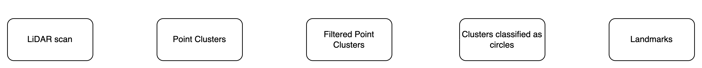

February, 2024
Extended Kalman Filter SLAM
Implementation of kinematics, odometry, simulation and EKF for SLAM from scratch.
Overview
This video shows the implementation working in real life. The visualization shows 2 robots, a blue turtlebot which represents the odometry estimation and the green one which is the estimation based on the EKF. The path corresponding to each robot is also shown. Landmarks are represented by cylinders. The green landmarks are part of the EKF estimation. These are extracted from the LiDAR scans, which are shown in red. There's some latency due to data transmission over a wireless network.

Kinematics & Control
A C++ library was implemented with helper functions for planar body motion, including transforms and geometric operations. A DiffDrive class implements the forward kinematics and odometry for a differential drive robot.
The Extended Kalman Filter
The Extended Kalman Filter allows us to get an estimation of the environment (robot + landmarks locations). Our system is nonlinear, so by using the EKF we linearize the state transition model and propagate uncertainty using the linearization as well.
Briefly, the steps are:
Landmark detection

The landmark detection pipeline consists of multi-step processing of the raw lidar data.
- Clustering the lidar scan points
- Filtering the clusters (by # of points in the cluster)
- Classifying each cluster as circle/not circle.
- Fitting circles to the clusters that made it through.
- Filtering the results based on our assumptions on the environment and landmarks. E.g. allowable radius of landmark.
Simulation
This video shows the implementation in simulation. The visualization shows 3 robots, a blue turtlebot which represents the odometry estimation, a red one which is the ground truth in the implemented simulation, and the green one which is the estimation based on the EKF. The path corresponding to each robot is also shown.
A full simulation environment was implemented as a ROS2 node. The simulation performs the forward kinematics based on velocity commands, and moves the robot accordingly. Noise & wheel slip are introduced sampling from Gaussian distributions for a more realistic environment. The environment provides configurable landmarks (cylinders) and walls. A simulated lidar sensor generates measurements based on the robot’s location in the environment, just like its real counterpart.
A list of features of the simulation environment follows:
Real world test
The simulation can only get us so far, especially if we don’t have accurate models of our sensor noise, slip, and motor responses. Getting the filter working on the real robot required a lot of tuning, especially the noise parameters in the EKF and parameters in the landmark association.
This post’s main video shows the algorithm working on a real Turtlebot 3 burger. The video shows the data being fed back to a PC and shown in Rviz2. The robot is driven around a course, and back to its initial position. The wheel odometry is pretty far from the actual position, while the SLAM estimation provides a better idea of where the robot is. The course is pretty simple, and carton walls were added due to the cluttered environment that produced many landmarks (which can be as bad as good!).
Qualitative Results
Driving the robot around the course and taking it back to its initial pose (eye-measuring using a mark on the floor, shown in the main video).
Final SLAM estimation (x,y,theta): (-0.02, 0.01, -0.06)
Final odometry estimation (x,y,theta): (0.02, 0.24, -0.67)